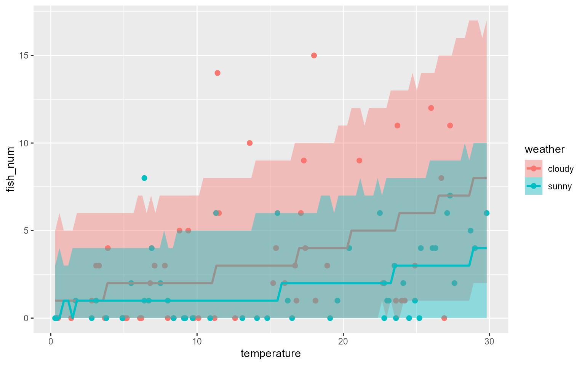
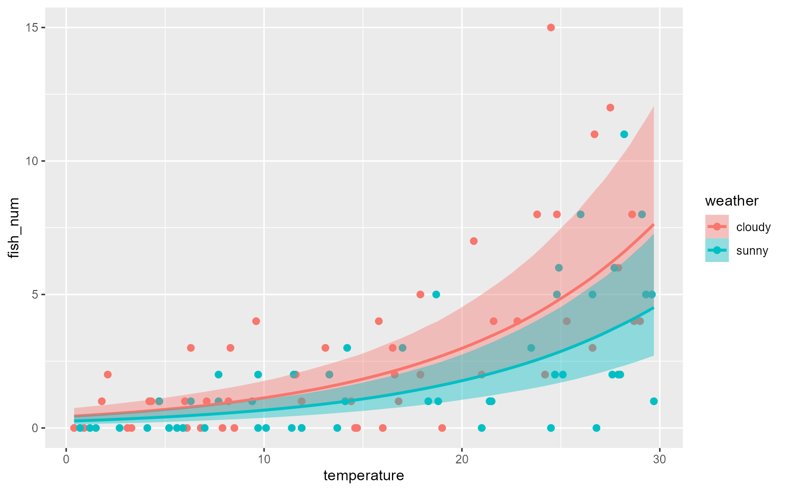

4部: 一般化線形混合モデル
4-1: 階層ベイズモデルと一般化線形混合モデルの基本
1. 本章の目的と概要
- 階層ベイズモデル
- 過分散が生じているデータ
- 一般化線形混合モデル(GLMM)
- 過分散への対応と高度なモデルの使用
2. 階層ベイズモデル
- 階層構造を持つモデル
- 上位層の確率変数の実現値が階層の分布のパラメータとなる
- さまざまなモデルで階層を想定可能
- 一般化線形混合モデル
- 状態空間モデル
3. 分析の準備
library(rstan)
library(brms)
rstan_options(auto_write=TRUE)
options(mc.cores=parallel::detectCores())
dat41<-read.csv('4-1-1-fish-num-2.csv')
dat41$id<-as.factor(dat41$id)
head(dat41, n=3)## fish_num weather temperature id
## 1 0 cloudy 5.0 1
## 2 1 cloudy 24.2 2
## 3 6 cloudy 11.5 3- id列：釣り人id。idが違うと人、環境が変わっている可能性がある。これをモデルに組み込みたいという話。
4. 通常のポアソン回帰モデルを適用した結果
brms41_1<-brm(
formula=fish_num~weather+temperature,
family=poisson(),
data=dat41,
seed=1,
prior=NULL
)## Compiling Stan program...## Start samplingeff41_1<-conditional_effects(brms41_1, method='predict', effects='temperature:weather',
prob=0.99)
plot(eff41_1, points=T)
- 本のコードでは95%予測区間になってそうだけど、上のは99%。そこからデータが出てしまうのは良くない＝モデルがデータに合ってない
5. 過分散対処のあためのGLMMの構造
- 基本は同じ
- 釣果数に気温と天気が影響する
- \(log(\lambda_i)=\beta_0+\beta_1x_1+\beta_2x_2\)
- ただし、調査対象者の違い、湖の状況の違いも影響するのでそれをモデルに入れる
- ランダムな影響\(r_i\)
- 平均0, 分散\(\sigma_\gamma^2\)
- \(\gamma_i\sim Normal(0, \sigma_r^2)\)
- \(log(\lambda_i)=\beta_0+\beta_1x_1+\beta_2x_2+r_i\)
- \(y_i\sim Poiss(\lambda_i)\)
- ランダムな影響\(r_i\)
6. 固定効果・ランダム効果・混合モデル
- 用語
- \(\beta\)で表現された係数として表される効果：固定効果
- 何らかの確率分布に従い、ランダムに変化する係数：ランダム効果・変量効果
- 固定効果とランダム効果を両方持つモデル：混合モデル
- 緑本P154
- 固定効果：全体の平均に影響
- ランダム効果：全体のばたつきは変えるが、平均には影響しない
7. モデルの構造の図式化
- 確率分布が階層的になっていることを階層モデルと呼ぶ、ということらしい
- まあ、それはそうか
8. GLMMのためのStanファイルの実装
- まずはStanでの実装から
data{
int N;
int fish_num[N];
vector[N] sunny;
vector[N] temp;
}
parameters{
real Intercept;
real b_temp;
real b_sunny;
vector[N] r;
real<lower=0> sigma_r;
}
transformed parameters{
vector[N] lambda = Intercept + b_sunny*sunny + b_temp*temp + r;
}
model{
r ~ normal(0, sigma_r);
fish_num ~ poisson_log(lambda);
}- transformed parameters内の式は線形予測子。おそらく、これは右辺をexp()に入れてもいいはずだけど、モデルでpoisson_log関数を使ってるので、そうしてないだけ。
- modelブロックないの\(r\sim normal(0, sigma_r)\)は事前分布の指定っぽいんだけど、sigma_rが変数なので分散はどうなる？参照先である2部6章では10000のような数値を入れていたけど。
- 合点がいった。sigma_rも推定対象なのか。ランダム効果の大きさを表すパラメータとのこと。
- ちょっと理解できない感じは残ってる
- 合点がいった。sigma_rも推定対象なのか。ランダム効果の大きさを表すパラメータとのこと。
- とにかく、sigma_rはパラメータ（r）のパラメータなので超パラメータあるいはハイパーパラメータと呼ぶらしい。
9. MCMCの実行
formula41<-formula(fish_num ~ weather + temperature)
mtx41<-model.matrix(formula41, dat41)
sunny_dummy<-as.numeric(mtx41[,'weathersunny'])
data_list41<-list(
N=nrow(dat41),
fish_num=dat41$fish_num,
temp=dat41$temperature,
sunny=sunny_dummy
)
res41<-rstan::sampling(stanmodel41, data=data_list41, seed=1)
print(res41, pars=c('Intercept','b_sunny','b_temp','sigma_r'), probs=c(0.025,0.5,0.975))## Inference for Stan model: stan-2e806d1ee782.
## 4 chains, each with iter=2000; warmup=1000; thin=1;
## post-warmup draws per chain=1000, total post-warmup draws=4000.
##
## mean se_mean sd 2.5% 50% 97.5% n_eff Rhat
## Intercept -0.46 0.01 0.35 -1.17 -0.45 0.17 811 1.01
## b_sunny -0.73 0.01 0.28 -1.31 -0.72 -0.18 1348 1.00
## b_temp 0.08 0.00 0.02 0.04 0.08 0.11 859 1.01
## sigma_r 1.10 0.01 0.16 0.83 1.09 1.45 830 1.01
##
## Samples were drawn using NUTS(diag_e) at Wed Apr 6 09:03:53 2022.
## For each parameter, n_eff is a crude measure of effective sample size,
## and Rhat is the potential scale reduction factor on split chains (at
## convergence, Rhat=1).10. brmsによるGLMMの推定
- brmsによる推定
brms41<-brm(
formula=fish_num~weather+temperature+(1|id),
family=poisson(),
data=dat41,
seed=1,
prior=NULL
)## Compiling Stan program...## Start samplingbrms41## Family: poisson
## Links: mu = log
## Formula: fish_num ~ weather + temperature + (1 | id)
## Data: dat41 (Number of observations: 100)
## Draws: 4 chains, each with iter = 2000; warmup = 1000; thin = 1;
## total post-warmup draws = 4000
##
## Group-Level Effects:
## ~id (Number of levels: 100)
## Estimate Est.Error l-95% CI u-95% CI Rhat Bulk_ESS Tail_ESS
## sd(Intercept) 1.09 0.15 0.82 1.41 1.00 1134 1869
##
## Population-Level Effects:
## Estimate Est.Error l-95% CI u-95% CI Rhat Bulk_ESS Tail_ESS
## Intercept -0.45 0.34 -1.15 0.19 1.00 1538 2279
## weathersunny -0.73 0.29 -1.31 -0.15 1.00 1369 2173
## temperature 0.08 0.02 0.04 0.11 1.00 1419 2046
##
## Draws were sampled using sampling(NUTS). For each parameter, Bulk_ESS
## and Tail_ESS are effective sample size measures, and Rhat is the potential
## scale reduction factor on split chains (at convergence, Rhat = 1).- formulaの最終項 (1|id) がランダム効果。1は切片。idがグループ名。
- ここでは対象者ごとに個別のグループということ？
- Group-Level Effectがランダム効果
11. 補足：正規線形モデルを拡張する場合の注意
- 今と同じ考え方で正規線形モデルにランダム効果を入れては行けない。
- 期待値と分散が違うパラメータだから
- でも、そもそも個体差みたいなものが無視された計測だったら入れてもいいのでは？
4-2: ランダム切片モデル
2. 分析の準備
library(rstan)
library(brms)
rstan_options(auto_write=TRUE)
options(mc.cores=parallel::detectCores())
dat42<-read.csv('4-2-1-fish-num-3.csv')
summary(dat42)## fish_num weather temperature human
## Min. : 0.00 Length:100 Min. : 0.40 Length:100
## 1st Qu.: 0.00 Class :character 1st Qu.: 7.55 Class :character
## Median : 1.50 Mode :character Median :14.65 Mode :character
## Mean : 2.48 Mean :15.55
## 3rd Qu.: 4.00 3rd Qu.:24.55
## Max. :15.00 Max. :29.703. ランダム切片モデルの構造
- 基本はさっきと同じ
- \(r_k\): kはAからJまで10種類
- 平均0、分散\(\sigma_r^2\)の正規分布に従う
- \(r_k\sim Normal(0, \sigma_r)\)
- \(log(\lambda_i)=\$beta_0+\beta_1x_1+\beta_2x_2+r_k\)
- \(y_i\sim Poiss(\lambda_i)\)
4. ランダム効果の使いどころ
- 固定効果とする必要がない場合＝興味ある効果ではない
- データに含まれる疑似反復を防ぐ＝反復測定？
5. brmsによるランダム切片モデルの推定
brms42<-brm(
formula=fish_num~weather+temperature+(1|human),
family=poisson(),
data=dat42,
seed=1,
prior=NULL
)## Compiling Stan program...## Start samplingbrms42## Family: poisson
## Links: mu = log
## Formula: fish_num ~ weather + temperature + (1 | human)
## Data: dat42 (Number of observations: 100)
## Draws: 4 chains, each with iter = 2000; warmup = 1000; thin = 1;
## total post-warmup draws = 4000
##
## Group-Level Effects:
## ~human (Number of levels: 10)
## Estimate Est.Error l-95% CI u-95% CI Rhat Bulk_ESS Tail_ESS
## sd(Intercept) 0.63 0.20 0.35 1.12 1.00 1114 1866
##
## Population-Level Effects:
## Estimate Est.Error l-95% CI u-95% CI Rhat Bulk_ESS Tail_ESS
## Intercept -0.87 0.29 -1.46 -0.31 1.00 1600 2034
## weathersunny -0.52 0.13 -0.77 -0.25 1.00 3622 2871
## temperature 0.10 0.01 0.08 0.12 1.00 4043 2762
##
## Draws were sampled using sampling(NUTS). For each parameter, Bulk_ESS
## and Tail_ESS are effective sample size measures, and Rhat is the potential
## scale reduction factor on split chains (at convergence, Rhat = 1).ranef(brms42)## $human
## , , Intercept
##
## Estimate Est.Error Q2.5 Q97.5
## A 0.76246389 0.2507210 0.29776983 1.278291524
## B 0.08964038 0.2900751 -0.48213749 0.670028220
## C 0.69476327 0.2554795 0.22398653 1.206560187
## D -0.60783840 0.3382417 -1.29825027 0.006334305
## E -0.11671980 0.2975916 -0.69450327 0.470415057
## F -0.73292936 0.3389056 -1.42431489 -0.101547684
## G 0.45046711 0.2676849 -0.04610697 0.997473205
## H -0.31042534 0.2835935 -0.87018872 0.232979536
## I 0.03316624 0.2847159 -0.55654620 0.595694211
## J -0.15397593 0.2918981 -0.73413287 0.4100674606. 回帰曲線の図示
eff<-conditional_effects(brms42, effects='temperature:weather')
plot(eff, points=T)
- 個別のグラフは本参照のこと
4-3: ランダム係数モデル
1. 本章の目的と概要
- 係数に対してランダム効果を加える
2. 分析の準備
library(rstan)
library(brms)
rstan_options(auto_write=TRUE)
options(mc.cores=parallel::detectCores())
dat43<-read.csv('4-3-1-fish-num-4.csv')
summary(dat43)## fish_num temperature human
## Min. : 0.000 Min. :10.10 Length:94
## 1st Qu.: 4.000 1st Qu.:13.22 Class :character
## Median : 7.000 Median :14.85 Mode :character
## Mean : 8.787 Mean :15.13
## 3rd Qu.:11.000 3rd Qu.:17.52
## Max. :29.000 Max. :19.90- human J のみデータが少ない
3. 交互作用を用いたモデル化
- temperatureの効果は人によって異なる、というモデル
brms43_ia<-brm(
formula=fish_num~temperature*human,
family=poisson(),
data=dat43,
seed=1,
prior=NULL
)## Compiling Stan program...## Start samplingconditions<-data.frame(human=c('A','B','C','D','E','F','G','H','I','J'))
eff<-conditional_effects(brms43_ia, effects='temperature', conditions=conditions)
plot(eff, points=T)- 10番の結果のみ右下がりの効果
- 観測回数が少ないことによる誤ったモデル化
4. ランダム効果と縮約
- 全体の効果をランダム効果を受けた効果に持ち込む＝縮約
5. ランダム係数モデルの構造
- ランダム切片とランダム係数をどちらもモデルに入れる
- \(\gamma_k\sim Normal(0, \sigma_\gamma^2)\)
- \(\tau_k\sim Normal(0, \sigma_\tau^2)\)
- \(log(\lambda_i)\sim \beta_0 + (\beta_1+\tau_k)x_{i1}+\gamma_k\)
- \(y_i\sim Poiss(\lambda_i)\)
6. brmsによるランダム係数モデルの推定
brms43_re<-brm(
formula=fish_num~temperature+(temperature||human),
family=poisson(),
data=dat43,
seed=1,
prior=NULL,
iter=8000,
warmup=5000,
control=list(adapt_delta=0.98, max_treedepth=15)
)## Compiling Stan program...## Start sampling- 本のままのパラメータでは警告
- iter=8000, adapt_delta=0.98 だと大丈夫
- 結果はそれほど変わらない？
- formulaの右辺、temperature||humanをtemperature|humanとすると、ランダム切片とランダム係数の間の相関を認めたモデルとなる。
7. 回帰曲線の図示
- 10番の曲線も右上がりとなる。縮約の効果。
8. ランダム効果を用いるさまざまなモデル
- ポアソン回帰だけじゃなくて、正規線形モデルやロジスティック回帰モデルでも可能